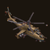
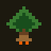

Xanadu Labs
Small games and tools, made with care.
Projects
-

Gunship AceA top-down attack-helicopter game. Fly a Mi-24 Hind through four missions, and flip jeeps with the rotor wash. -

Fall LineThe snow left. The hill stayed. A downhill dodge on a dry mountain, on a skateboard, a mountain bike or a motorbike. -
SinopiaA layered image compositor. Your picture is a folder of PNGs, so it stays yours. Opens and saves PSD.